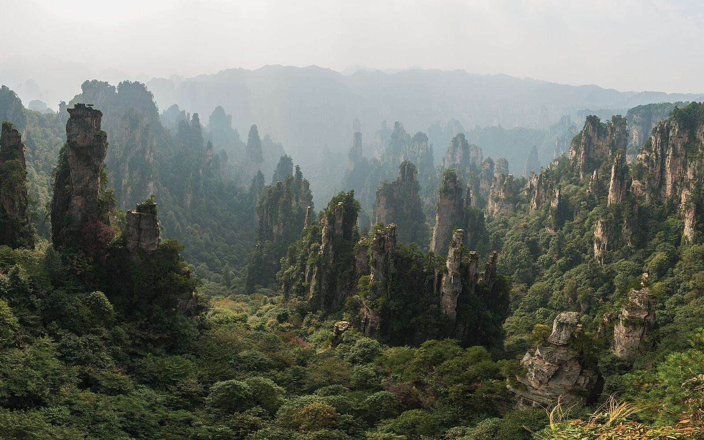

Tianmen Mountain
Reserve the current Route C product. Use the transfer to the mountain gate, the cave express cableway and summit escalators. Leave the rest of the day flexible rather than booking a tight onward train.
Current route details →Two days for highlights, three for the forest park plus one extra attraction, four for all three scenic areas.

Choose full sightseeing days, excluding arrival and departure. These are fixed suggested routes, with room for queues.
| Days | Suggested route | Trade-off |
|---|---|---|
| 2 | Day 1: Yuanjiajie + Tianzi Mountain. Day 2: Tianmen Mountain, or a second forest-park day. | A compact highlights trip; leave out the Grand Canyon. |
| 3 | Days 1–2: forest park. Day 3: Tianmen Mountain OR Grand Canyon. | The recommended starting point; choose one extra attraction. |
| 4 | Days 1–2: forest park. Day 3: Grand Canyon. Day 4: Tianmen Mountain. | All three scenic areas, with a hotel move before Tianmen. |
Stay in Wulingyuan the night before. Start at your reserved entrance and follow the operating shuttle route to the Bailong Elevator for Yuanjiajie, if you choose to pay for the lift. Walk the viewpoint circuit, then use the signed inter-area shuttle to Tianzi Mountain.
Descend using the operating Tianzi cableway or the alternative route confirmed by staff. Keep time for the return shuttle before service ends. Do not add Huangshizhai to this day simply because it looks close on a map.
Use the South / Forest Park entrance for Golden Whip Stream if that matches your route. The walk connects the entrance area and Shuiraosimen; confirm your onward bus route before starting a one-way walk.
Choose one addition: Huangshizhai for its ridge views, or Yangjiajie for more walking. Rain or slow queues are a reason to shorten the plan. There is no sunrise cable-car assumption in this itinerary.
Reserve the current Route C product. Use the transfer to the mountain gate, the cave express cableway and summit escalators. Leave the rest of the day flexible rather than booking a tight onward train.
Current route details →Travel from Wulingyuan to the separate canyon scenic area. Select a product that includes the bridge if you want to cross it, then allow time for the canyon walk and exit transfer.
Bridge & canyon details →Visit the canyon on Day 3, then move to the city for Tianmen on Day 4. The canyon is not on a direct no-backtracking route from Wulingyuan to the city.
Editorial review: 13 October 2026. Operational claims below are dated, not a live status feed.